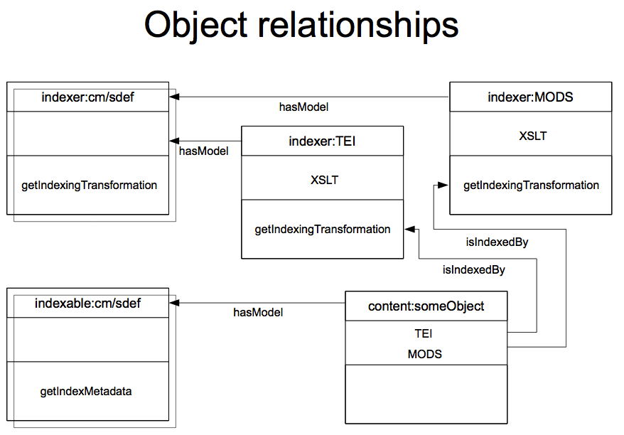
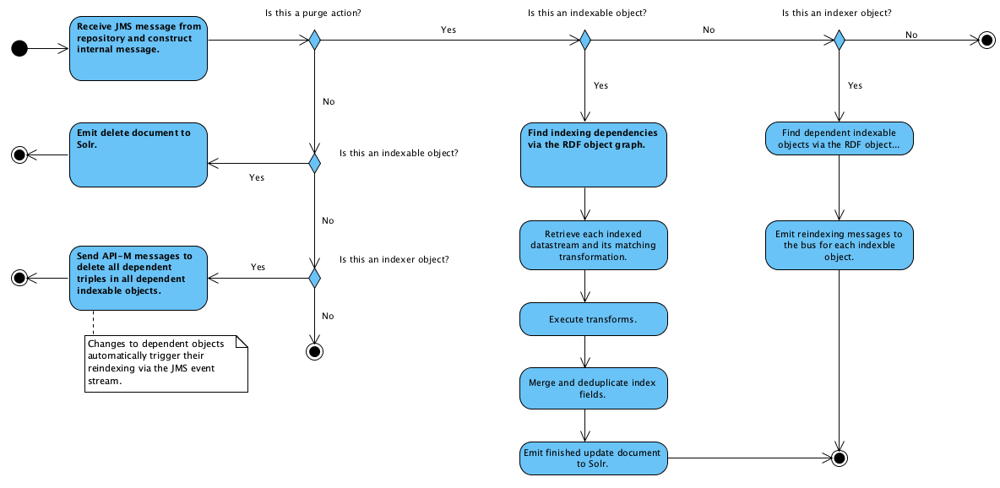

Beverly's design
Beverly is predicated on the following object model:

The intention is to declaratively configure the indexing workflow via Fedora's RDF graph. Each object that is indexable is made known to be so by attaching to it an "indexable" Fedora content model. The name of that content model is configurable, but in this diagram it is shown as "indexer:cm". Shown as a shadow behind "indexer:cm" is "indexer:sdef", which entails the one dynamic dissemination that this content model provides: "getIndexMetadata". In the RELS-INT datastream of an indexable object (shown here as "content:someObject"), links are made between the datastreams that should be used for index extraction and the transformations that will be used for extracting on those datastreams.
The assumption is made that each transformation yields a complete and valid Solr XML record, all of which are then merged and de-duplicated to become the final record for that object.
Further, there are indexer objects (shown as "indexer:TEI" and "indexer:MODS") which supply those very transformations via a "getIndexingTransformation" dynamic dissemination. For example, an RDF link between datastream content:someContent/MODS and the getIndexingTransformation dissemination of indexer:MODS indicates that running the output of getIndexingTransformation (an XSLT transform) against content:someContent/MODS will produce a valid Solr XML record (which presumably will contain index fields that can be drawnw from descriptive metadata, such as MODS is).
It is entirely possible to use external URLs for the targets of these RELS-INT links. The advantage to curating the indexing transformations inside the repository as shown here is that we are able to use the repository's notification facility to take action when an indexing transformation has changed, automatically reindexing all affected objects. This eliminates a huge amount of manual labor which typically takes the form of running many different scripts to redo indexing. It also presents the possibility of "iterative" work correcting or improving an indexing transformation with the opportunity to see the results across many different objects very quickly.
Here is a high-level diagram of Beverly's workflow:
